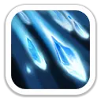
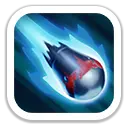
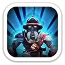
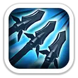
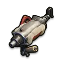
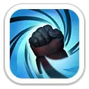

Кислотный дождь
Поливает область кислотной смесью, наносит периодический урон каждые 0,5 секунды и на 3 секунды увеличивает получаемый целями урон на 15%.
60% / 66% / 72% / 78% / 84% атаки за тик

Дебафф летальности · усиление урона по пехоте · герой Колеса удачи
Фред — атакующий копейщик 9 поколения. Он ослабляет летальность всей армии противника, увеличивает получаемый вражеской пехотой урон и каждые четыре атаки создаёт мощное окно дополнительного урона для копейщиков.
Максимальные базовые значения Фреда 9 поколения.
На Арене Фред сочетает продолжительный урон, снятие усилений и резкий рост живучести при низком здоровье.

Поливает область кислотной смесью, наносит периодический урон каждые 0,5 секунды и на 3 секунды увеличивает получаемый целями урон на 15%.
60% / 66% / 72% / 78% / 84% атаки за тик

Смывает боевые бонусы цели и одновременно наносит высокий разовый урон.
200% / 220% / 240% / 260% / 280% атаки

Когда здоровье падает ниже 50%, Фред резко усиливает атаку и защиту.
Атака +8/12/16/20/24% · Защита +25/37.5/50/62.5/75%
Фред раскрывается как герой ослабления противника и поддержки атакующего сбора.
Снижает летальность всех войск противника.
−4% / −8% / −12% / −16% / −20%
Вражеская пехота получает больше урона от всех источников.
+4% / +8% / +12% / +16% / +20% получаемого урона

Каждые 4 атаки копейщики Фреда наносят дополнительный урон, а на следующем ходу урон вражеских войск снижается.
+40/80/120/160/200% урона · урон врага −4/8/12/16/20%

На максимуме: +2 088 атаки, +2 088 защиты, +20 880 здоровья, +232% летальности копейщиков и +232% здоровья копейщиков.

Одна из лучших ролей Фреда: два дебаффа противника плюс +15% атаки сбора от эксклюзивного снаряжения.
Сильный герой затяжного боя, особенно когда нужно ломать плотную пехоту противника.
Кислотный дождь усиливает входящий урон, а Водяная пушка снимает боевые усиления.
Рабочий вариант как лидер марша, но его набор сильнее ориентирован на PvP-дебаффы, чем на чистый урон по Медведю.
Фред — главный F2P-герой 9 поколения благодаря Колесу удачи. Он особенно хорош в атакующих сборах и PvP: режет летальность противника, усиливает урон по пехоте и через эксклюзивное снаряжение повышает атаку всего сбора. Для Медведя полезен, но его сильнейшая сторона всё же не чистый PvE-урон, а разрушение обороны соперника.